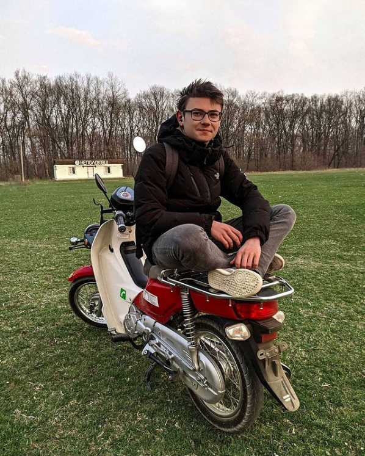

|  | Гакман Василь - 542 група |
Мною створені три документи!
| 1-й документ | 2-й документ | 3-й документ |
У багатьох людей є хобі. Хобі це-те заняття, виконання якого приносить нам радість і спокій.
Вірніше сказати, це хобі – то справа, що ми завжди виконуємо з ентузіазмом, у вільний час.
До того ж хочеться сказати, що у кожної людини можуть бути різні улюблені заняття, тобто хобі.
Хтось любить читати, хтось танцювати, цей список можна продовжувати до нескінченності.
Наприклад, мій тато дуже любить ходити на риболовлю. Практично кожні вихідні він намагається знайти
час для свого улюбленого заняття. До того ж його хобі прибуткове. З риболовлі він приносить великий улов,
тому наша сім'я завжди може харчуватися смачною рибою. Деяку частину риби, мама продає знайомим.
Вона дуже радіє, що татове хобі годує сім'ю, і приносить невеликий дохід.
А ось моя мама дуже захоплюється кулінарією. Вона пече такі смачні пироги та печиво.
Таку чудову випічку в магазині не купиш. Мама каже, що готування і випічка приносить їй істинне задоволення.
Ми діти дуже радіємо, що у нашої мами таке корисне, а головне смачне хобі.
Я, як і моя мама, дуже люблю готувати. Правда мама особливо не дозволяє мені працювати на кухні,
але коли я вирушаю на канікули до бабусі, тол ніхто не заважає мені пекти пироги і робити торти.
Бабуся мене дуже хвалить, і говорить, що у мене талант до кулінарії.
Її слова мене дуже тішать, і можливо моя майбутня професія буде пов'язана з харчовою промисловістю.
Я мрію стати шеф-кухарем у ресторані. Бабуся мене підтримує, і говорить,
що людина повинна займатися тією справою, до якої у нього лежить душа.
Кулінарія моє покликання. І я пишаюся тим, що у мене є улюблена справа. Тим більше,
вже настільки в юному віці я чудово готую і печу. А головне все це мені дуже подобається.
На своє день народження, я сама спекла величезний торт, який дуже сподобався всім гостям.
Звичайно, щоб було швидше і легше, мама трохи допомогла мені з бісквітами.
Я думаю, що ніколи не покину своє улюблене заняття. І воно стане справою всього мого життя.
Повернутись догори